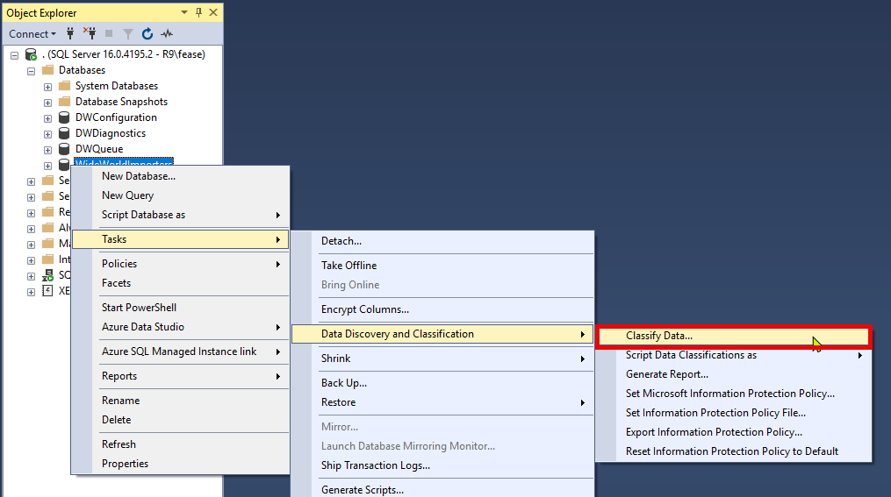
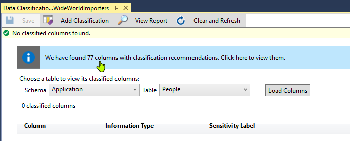
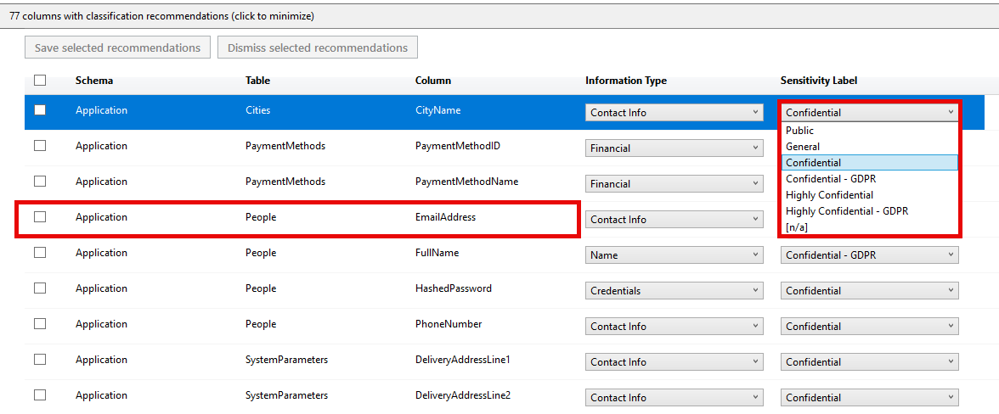
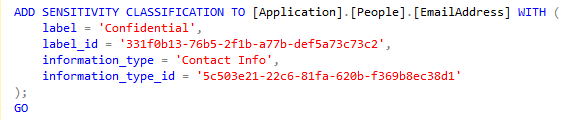
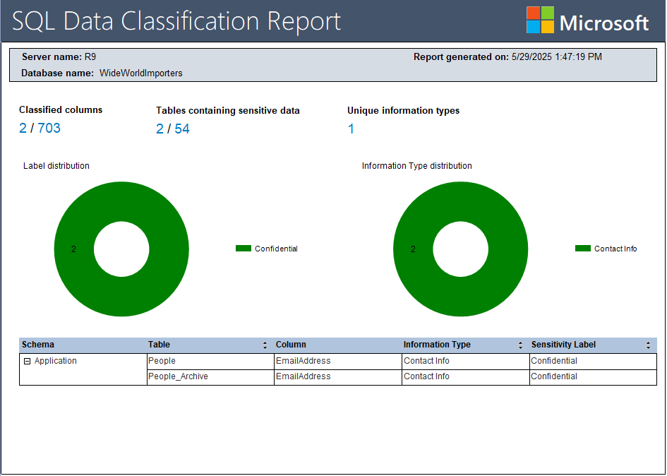

Securing SQL Server
Kevin Feasel (@feaselkl)https://csmore.info/on/securesql
Who Am I? What Am I Doing Here?


Motivation
My goals in this talk:
- Provide a high-level view of the surface area for security in SQL Server
- Focus on specific functionality to help secure SQL Server instances
- Demonstrate implementation of certain functionality
- Occasionally contrast on-premises SQL Server with Azure SQL Database and Azure SQL Managed Instance
Agenda
- Setting Expectations
- Installation and Configuration
- Patch Management
- Data Encryption
- Connection Security
- Quick Hits
- Additional Tooling
Focus Points
In this talk, we will focus on SQL Server, whether on-premises or in a cloud.
Additionally, we will look at some functionality in Azure SQL Database and Azure SQL Managed Instance. Most of the content will overlap.
Security is a Broad Topic

Out of Scope
This talk will not cover:
- SQL injection
- Good SQL or application development practices
- Logins, users, roles
- Permissions management
These are important topics but we will not have time to cover them in this talk.
A Narrowed Scope

Agenda
- Setting Expectations
- Installation and Configuration
- Patch Management
- Data Encryption
- Connection Security
- Quick Hits
- Additional Tooling
Surface Area - The Basic Idea
- Do not install unnecessary components
- Turn off unnecessary services
- Disable unnecessary features
Unnecessary Components
Do you really need all of the following on your OLTP instance?
- SQL Server Reporting Services
- SQL Server Analysis Services
- SQL Server Integration Services
- SQL Server Machine Learning Services
- SQL Server client tools (Management Studio)
These are very useful products and tools, but if this instance doesn't need them, don't install them! An attacker can't exploit a product that isn't installed.
More Unnecessary Components
Do not install sample databases on production instances. Examples include:
- Wide World Importers
- AdventureWorks
- Contoso
- Northwind
If you don't need a database for production, don't make it available! -- STIG V-40943
Turn Off Services
If you do not need a service, turn it off. Attackers cannot take advantage of disabled services as an entry point for an attack.
Examples of services you may not need:
- SQL Server Browser - Needed for named instances with dynamic ports.
- SQL Server VSS Writer - Needed to copy data files while SQL Server is running (e.g., third party file copy tools).
What About xp_cmdshell?
Some people argue that you should disable xp_cmdshell because attackers can use it to run commands on the underlying Windows server.
Disabling xp_cmdshell is bad advice. By default, xp_cmdshell is available only to sysadmins. Therefore, for an attacker to use xp_cmdshell, that attacker must be a sysadmin. And sysadmins can re-enable xp_cmdshell at will!
Service Accounts
YOUR SERVICE ACCOUNT DOES NOT NEED DOMAIN ADMIN RIGHTS!
If your SQL Server machine gets compromised, the best case scenario is that an attacker has no rights outside of SQL Server.
In practice, SQL Server instances need some rights (especially for features such as Filestream/Filetable) and granting those rights is fine. But there is never a requirement to be Domain Admin.
The Principle of Least Privilege: give the fewest rights necessary.
Virtual Accounts
Windows Server 2008 R2 and SQL Server 2012 introduced the concept of virtual accounts: non-domain pseudo-accounts which have permissions on the local machine.
If you need to grant additional rights to virtual accounts, you can do this by changing permissions on the machine account in Active Directory.
Ex: for a server named PRODSQL, modify the PRODSQL$ machine account in AD
Service Accounts

When Not To Use Virtual Accounts
You cannot use a virtual account on a cluster. You do need a valid domain account for clustered services.
You do not need to use virtual accounts to be secure; you can use valid domain accounts. Virtual accounts are useful, however, because they enforce separation of accounts between servers--an attacker only has rights to the exploited SQL Server instance rather than all instances on your domain.
Group Managed Service Accounts (gMSA)
gMSAs require you to create an AD security group and add computer objects to the security group. Then, create the gMSA and specify the security group to link.
The upshot is that your service account can be the same across any failover cluster nodes, and you do not need to manage passwords like a regular domain account.
Microsoft Entra ID
If you are using Azure SQL Database or Managed Instance, you cannot use Active Directory for logins. You must use Microsoft Entra ID.
If you have SQL Server on an Azure VM or are using an Azure Arc-enabled SQL Server VM, you can use Entra ID for authentication.
Entra ID is just as good as Active Directory for SQL Server authentication.
Entra Managed Identities
Azure SQL DB and Managed Instance can make use of managed identities, which allow the database access to other resources without using an explicit account.
This is similar to an Active Directory managed service account or gMSA: you do not need to manage passwords. You can define a managed identity as an existing Entra ID account (user-assigned) or allow Azure to manage everything (system-assigned).
Disable Named Pipes
Use the Configuration Manager to disable Named Pipes. Services on the same machine (like SSIS) may use Shared Memory to connect. Most applications will use TCP/IP to connect. Named Pipes is most useful for apps designed around NetBIOS and you likely will never want to use it.

What About Non-Standard Ports?
Some people argue that you should configure SQL Server to listen on non-standard ports (TCP 1433). This is not bad advice, but does not provide much benefit by itself; an attacker can still use other methods to obtain information on the active port, such as running a port scan.
This could be useful in conjunction with honeyports, a topic outside the scope of this talk.
Agenda
- Setting Expectations
- Installation and Configuration
- Patch Management
- Data Encryption
- Connection Security
- Quick Hits
- Additional Tooling
The Microsoft Servicing Model
Microsoft has a 10-year servicing model for SQL Server versions. This includes:
- 5 years of mainstream support, with security fixes, regular bugfixes, and occasional added functionality
- 5 years of extended support, with security fixes and critical bugfixes
- Up to 3 years of additional support for critical security issues. Requires additional payment
The Microsoft Servicing Model in Practice
Support end dates for recent versions of SQL Server:
| Version | Mainstream Support | Extended Support |
|---|---|---|
| 2022 | January 11, 2028 | January 11, 2033 |
| 2019 | February 28, 2025 | January 8, 2030 |
| 2017 | October 11, 2022 | October 12, 2027 |
| 2016 | July 13, 2021 | July 14, 2026 |
| 2014 | July 9, 2019 | July 9, 2024 |
| 2012 | July 11, 2017 | July 12, 2022 |
SQL Server Patching
Older versions of SQL Server had Service Packs (SPs). Since SQL Server 2017, we have had Cumulative Updates (CUs) but no SPs.
CUs are released approximately every 2 months, with the latest CU containing all fixes from previous CUs. You can apply a CU to an instance without needing to apply previous CUs.
Microsoft also releases occasional General Distribution Releases (GDRs) for critical security issues. These are not cumulative and you must apply the GDR to the specific version of SQL Server that you are running.
Know Your Build
The SQL Server Versions website (sqlserverversions.com) keeps track of each build of SQL Server, going back to 6.0.

Know Your Build
To find your version of SQL Server, run the command SELECT @@VERSION.

Know Your Build
Compare it to the website to see if your version is behind on important fixes, like this one is.

How Frequently Should I Patch?
Your corporate policy will likely dictate how frequently you need to patch SQL Server.
Generally, SQL Server CUs are safe to install, but occasionally, new bugs pop up. Some of these bugs are show-stoppers, to the point that Microsoft has withdrawn several CUs, including two in SQL Server 2019.

How Frequently Should I Patch?
You can also review patch notes to see what they include and what known bugs are still in them.

Agenda
- Setting Expectations
- Installation and Configuration
- Patch Management
- Data Encryption
- Connection Security
- Quick Hits
- Additional Tooling
Transparent Data Encryption
Transparent Data Encryption
Transparent Data Encryption (TDE) is a feature in SQL Server that encrypts data at rest, meaning data stored on disk. It does not encrypt data in memory or data being sent over the network.
TDE is available in Enterprise and Standard versions of SQL Server, as well as Azure SQL Database and Azure SQL Managed Instance.
TDE does protect data in backups automatically, and you will need the correct certificate installed on an instance if you want to restore that data.
TDE introduces a small but noticeable (~5%) performance hit.
Demo Time
When To Use TDE
TDE can be useful as one part of a security strategy, but you can bypass TDE on its own. It also incurs a non-zero performance penalty, which might be too much for busy transactional systems.
Because TDE also encrypts tempdb, all databases tend to take a performance hit, even databases without TDE configured.
Transparent Data Encryption

Full-Disk Encryption
If you use a full-disk encryption solution such as BitLocker, you will get most of the benefits of TDE without as much CPU overhead.
It does not encrypt backups, however, so if you copy your backups elsewhere, they will not be protected.
Full-Disk Encryption

Backup Encryption
SQL Server 2014 gave us native backup encryption. This is available in Standard Edition.
Backup encryption uses AES (128, 192, or 256 bit key lengths) and requires a certificate or asymmetric key be available for encryption.
Demo Time
Backup Encryption - When to Use
Almost always. You can combine encryption with backup compression and the backup engine is smart enough to compress first.
The exception: if you have a third-party data de-duplication engine which stores your database backups, you will likely lose de-dupe benefits.
Backup Encryption

Column-Level Encryption
SQL Server also supports column-level encryption (also known as cell-level encryption). This allows you to encrypt specific columns in a table, rather than the entire database.
This is best for data that you need to secure, need to see in plaintext, and will not be part of a WHERE clause.
Demo Time
Column-Level Encryption Considerations
- Data must fit within VARBINARY(8000)
- Indexes are also encrypted, so scans will be expensive
- Encryption and decryption are relatively CPU-intensive operations
Column-Level Encryption

Row Level Security
SQL Server supports segmenting records in a table based on user permissions.
It is available in any edition of SQL Server since 2016 SP1.
Demo Time
Row Level Security Considerations
- Insert statements are not protected.
- Queries now introduce a table-valued function which runs each time. This can be a significant performance drag.
- There are side-channel attacks which users can perform to get an idea of what data is available, even if they can’t see the data itself.
Row Level Security - When to Use
Use row-level security when you need to segment user access within a table and can afford the performance hit of running a table-valued function on queries.
This is not a viable mechanism for security on a very busy transactional system, but could potentially work well in a relational warehouse scenario.
Row Level Security

Always Encrypted
Always Encrypted allows you to encrypt sensitive columns so that database users, even sysadmins, cannot view certain sensitive columns. Connecting applications need a copy of the private key, allowing them to decrypt results. When implemented correctly, the only method to view sensitive data is through legitimate application access.
Historically, we have been able to roll our own encryption solutions, encrypting data in applications before storing it in SQL Server. Always Encrypted makes this process transparent to application developers.
Deterministic and Randomized Encryption
Deterministic encryption guarantees the same encrypted value for any plain-text value.
Randomized encryption randomizes encrypted values, making it impossible to perform reversal attacks based on frequency.
Deterministic and Randomized Encryption
| Operation | Deterministic | Randomized |
| JOIN | Yes | NO |
| DISTINCT | Yes | NO |
| GROUP BY | Yes | NO |
| WHERE | Equality Only | NONE |
Performance on the Client
The primary performance hit will be on your client side, as encryption and decryption happens there.
Because you are sending VARBINARY over the network, you will likely have more data transfer. Also, Always Encrypted may require additional database hits to retrieve metadata needed for queries.
Secured Enclaves
Secured enclaves are a new feature in SQL Server 2019 and Azure SQL Database which allow you to perform operations on encrypted data without decrypting it first.
This allows you to perform operations such as aggregations and joins on encrypted data without needing to decrypt it first.
Performance Implications
There is very little good information on Always Encrypted performance, with most articles either out of date or very limited in scope.
Expect some minor performance impact on insert and update operations, and your major performance hit will come if you retrieve and decrypt data for a large number of rows.
Secure enclaves can help with that performance, though it will not be as fast as plaintext operations and will consume some server CPU.
Always Encrypted - When To Use
Use Always Encrypted to protect sensitive data which even database administrators should not be allowed to view.
If users need to be able to perform point lookups on data, use deterministic encryption instead of randomized encryption.
Focus on specific columns rather than encrypting everything.
Always Encrypted

Agenda
- Setting Expectations
- Installation and Configuration
- Patch Management
- Data Encryption
- Connection Security
- Quick Hits
- Additional Tooling
Firewalls
Firewalls are critical for preventing unwanted traffic from accessing critical devices.
Firewalls can be hardware-based (e.g., a firewall appliance) or software-based (e.g., Windows Firewall).
We can use them to allow or deny traffic based on IP address, port, protocol, and other criteria.
Perimeter and On-Device Firewalls
There are two major strategies around firewalls: perimeter firewalls and on-device firewalls.
In corporate environments, you typically see perimeter firewalls: the outside world is scary and inside the boundaries is fine.
In cloud environments, you often see on-device firewalls in order to provide finer-grained access to specific cloud services.
Firewalls on my SQL Server Machine?
Firewalls do consume some resources and DBAs tend not to be particularly familiar with the specifics of firewalls. For those reasons, we typically do not see firewalls on the machines hosting SQL Server, and we typically disable Windows Firewall.
For Azure SQL Database, you always want the firewall to be on. Save for very specific circumstances, full public access to your SQL Server instance is a very bad idea.
Subnets, VLANs, and VNets
A powerful way to protect SQL Server is to control which machines are allowed to access it. You can segment machines on a network in various ways. In hardware, these are subnets. With virtual machines, these are VLANs. In Azure, these are VNets.
The idea of each is simple: only machines from specific IP addresses are allowed to communicate with machines on this network segment.
Ex: given a subnet for your SQL Server machines and a subnet for your application servers, you can allow only the application servers to access the SQL Server machines.
Outbound Traffic
In general, there is little reason to enable outbound traffic from your SQL Server to the broader internet. Most functionality in SQL Server can run on an isolated machine without Internet access.
There are specific exceptions, such as if you are using SQL Server Machine Learning Services and want to install R or Python packages. Also, keep in mind the need to patch and how you will be able to move patches onto the server for installation.
Firewalls

TLS Encryption
SQL Server offers the ability to use a TLS certificate for encrypting connections. This provides security for data in transit over a network ("data in motion") and prevents attackers from using packet sniffing tools to read data packets.
There are two viable certificate options available:
- Self-signed certificate (ONLY FOR TESTING!)
- Enterprise authority-generated certificates
Using an EA to generate certificates is outside the scope of this talk.


TLS Encryption

Agenda
- Setting Expectations
- Installation and Configuration
- Patch Management
- Data Encryption
- Connection Security
- Quick Hits
- Additional Tooling
Data Discovery and Classification
SQL Server has built-in capabilities around data discovery and classification. The purpose of this is to track sensitive data in your databases, not to limit access to that data.
Data Discovery and Classification

Data Discovery and Classification

Data Discovery and Classification

Data Discovery and Classification

Data Discovery and Classification

Microsoft Purview Information Protection
If you have Microsoft Purview, you can use it to classify data in SQL Server. This also allows you to apply sensitivity labels to data, and tools like Power BI will automatically apply those labels to data in reports.
Auditing
SQL Server has a built-in auditing capability that allows you to track events and write them to a file, the Windows Security log, or the Windows Application log. This is useful for tracking access to sensitive data, including reads and writes.
I recommend keeping these audits narrow in scope, as they can slow down performance on busy servers.
Module Signing
Module signing allows you to add fine-grained permissions to modules (stored procedures, triggers, assemblies, etc.). It lets you offer a secure way of performing some operations without giving users full permissions to the underlying objects.
More information is available at modulesigning.info.
Ledger Tables
Ledger tables are a way of preserving historical data. All prior versions of data will remain available in a table and the functionality uses blockchain technology to track these changes. This capability is valid for forensic analysis and auditing purposes.
Two ledger options are available on tables: append-only or updatable.
SQL Server also has a ledger verification process to ensure that nobody has tampered with the cryptographically secure hashes.
Is Ledger What You Need?
- Ledger databases cannot be converted back to non-ledger databases
- Non-ledger tables cannot be converted to ledger tables later
- You cannot delete old data from append-only ledger tables or from the history of updatable ledger tables
- It is difficult to change ledger tables once you have created them
- A variety of SQL Server capabilities either will not work or only partially work (e.g., In-Memory OLTP, partition switching, change tracking or change data capture on history tables, transactional replication)
Linked Servers vs PolyBase
Linked servers are a mechanism in SQL Server that allows you to connect to a remote data source and access data.
PolyBase is Microsoft's technology for data virtualization.
Linked Servers vs PolyBase
You can connect to a linked server using your own AD credentials (assuming you have SPNs in place to deal with the Kerberos double-hop) or using a fixed login. If you are using connection pooling through an app, you will almost assuredly use the fixed login.
PolyBase only allows a fixed login saved as a database scoped credential--you cannot forward your Active Directory credentials.
Linked Servers vs PolyBase
When you connect to a linked server using a fixed login, every user gets the same set of permissions to all assets on the server. You cannot set role-based access controls on a linked server.
With PolyBase, you create assets as external tables. The downside is that you need to create separate external tables for each remote table/view you want to access. But you can set permissions on these external tables, locking them down as desired.
Agenda
- Setting Expectations
- Installation and Configuration
- Patch Management
- Data Encryption
- Connection Security
- Quick Hits
- Additional Tooling
Vulnerability Assessment
Microsoft Defender for Cloud includes a variety of common vulnerability checks for the SQL Server family of products.
This feature requires that you use Azure SQL Database, Azure SQL Managed Instance, SQL Server on an Azure virtual machine, or SQL Server on an Azure Arc-enabled server.
Vulnerability Assessment

dbachecks
dbachecks is a testing library for SQL Server configuration, built in PowerShell on top of the Pester framework.
It includes a variety of checks for SQL Server configuration, including security checks following the CIS framework.
sp_CheckSecurity
sp_CheckSecurity is a stored procedure that Straight Path Solutions offers for performing a variety of security checks.
It focuses on instance- and database-level settings but is not a full implementation of CIS or STIGs recommendations.
Wrapping Up
Over the course of this talk, have looked at a variety of things we can do to improve the security of a SQL Server instance. This is not a complete list of everything you need to know for security, but should act as a good starting point in conjunction with permissions management and writing secure code.
Wrapping Up
To learn more, go here:
https://csmore.info/on/securesql
And for help, contact me:
feasel@catallaxyservices.com | @feaselkl
Catallaxy Services consulting:
https://CSmore.info/contact